Celebração Majin Buu Saga
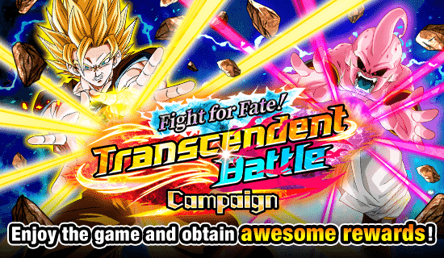
A celebração de Ano Novo muito atrasada.
O global infelizmente tem 0 motivação pra gastar nos personagens daqui, já que eles são humilhados nos novos eventos que vão chegar no aniversário. Bem triste.
^
Sumário (clique para ir a qualquer um dos tópicos)
- Irmãos Para-Para F2P
- Goku SSJ2/SSJ3 PHY
- Kid Buu STR
- Os EZAs dos F2Ps de Majin Buu Saga
- EZAs dos Vegettos TEQ e INT
- EZAs do Goku STR e Vegeta INT
- eza do super buu teq
- EZA do Goten e Trunks LR
- EZA do Mighty Mask Super Strike
Os Irmãos Para-Para F2P

O card de primeiro de Abril tá aqui por algum motivo, é isso.
Esses caras são um suporte que é até interessante, mas eles não tem time
Eles dão 25% de ATK e DEF pra todo mundo sempre, o que já é bom
Se eles estiverem no slot 1 ou 2, eles dão +25% de ATK pra todo mundo, e se tiverem no slot 3, dão +25% de DEF
É basicamente só isso que eles fazem
Eles até seriam usáveis se tivessem pelo menos algum desvio ou sei lá, mas não tem muito que possa ser feito 💀
Goku SSJ2/SSJ3 PHY
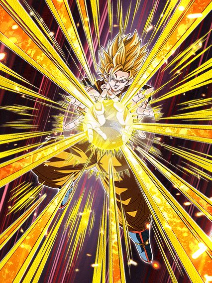
Um card baseado em RNG que eu amo demais.
Esse cara tem animações lindas, artes incríveis e uma OST muito boa, card incrível
Em questão de kit, ele começa super tranquilo, tendo 50% de chance de crítico e lançando apenas um adicional com 30% de chance de ser um Super Attack
Até aí, nada de muito doido
Se teu HP cair abaixo de 77% a partir do turno 3 você pode transformar ele, e aí sim fica interessante..
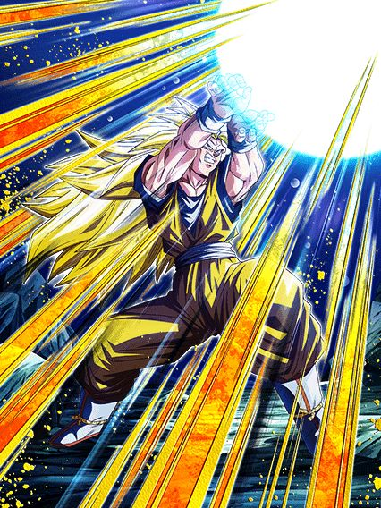
O dano.
Esse cara lança 2 adicionais com 30% de chance de serem Supers, tem até 300% de ATK pra ajudar no dano, e ainda tem 70% de chance de crítico por 6 turnos
Esse cara se resume a dar os Supers adicionais dele
Se ele conseguir dar 3 ou 4 Supers, a defesa dele fica bem aceitável e o dano dele é muito absurdo, já que ele começa a derreter a vida do boss
Caso não.. aí você se preocupa
Esse cara é muito focado em só dano, mas eu nunca vou parar de gostar dele.
Kid Buu STR
")
Ele realmente precisa de um time.
Esse cara não se transforma nem nada, apenas foca em buildar mais stats pra ele mesmo
Ele builda 120% de ATK e DEF com 4 ataques, e assim como o Goku, lança um adicional com 30% de chance de ser um Super Attack
Ele cura 20% de HP se levar um golpe, e ele tem 70% de chance de nulificar Super Attacks desarmados, o que é algo
Ele pode usar a Active Skill dele se ele levar 6 ataques ou tiver um inimigo Majin Buu Saga, e a Active dá 20% de ATK e DEF multiplicativos em cima dos stats que ele já tem
O dano dele é bom, a defesa é decente, a cura é útil, as animações e OST dele são incríveis.. só que ele não tem time
Não tem nenhum outro personagem Majin Power que ajude a linkar com esse cara, o que é complicado, já que ele tem Big Bad Bosses e tudo
Ele tem muito potencial, mas fica só nisso.
Os EZAs dos F2Ps de Majin Buu Saga
Podiam ter sido um pouco melhores.
Eles são interessantes, mas não o suficiente, infelizmente
Grande Saiyaman 2/1
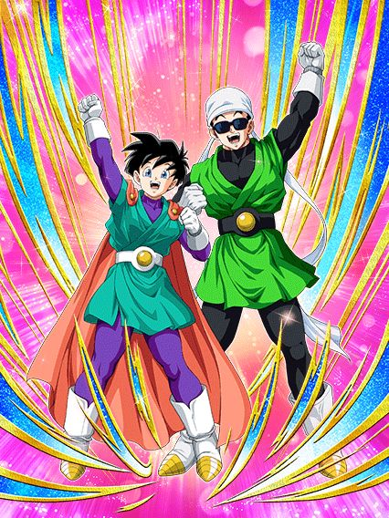
Sinceramente, é melhor nem usar a Active deles.
A Videl tem 50% de chance de desvio e ainda dá 30% de ATK e DEF pra Special Pose
Só isso já faz dela muito mais valiosa e vale mais a pena ter isso do que trocar pro Gohan
Bom, caso você queira, fica disponível a partir do turno 3 se você estiver acima de 58% de HP
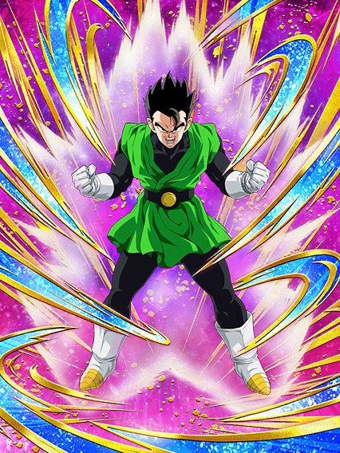
Dano.
O Gohan é um personagem de dano genérico, e por ele ser um F2P, os stats dele acabam não sendo altos o suficiente pro dano dele ser bom
O mais interessante que ele tem é ganhar 10% de ATK e 5% de chance de crítico por Special Pose no time, mas isso nem se compara ao desvio e suporte né?
Kaioshins TEQ
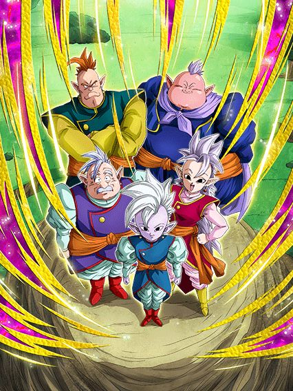
Eles querem que você coloque eles no slot 1 💀
Eles até tem um kit interessante, dando 20% de ATK e DEF pra Super Class e curando 15% de HP se levarem um golpe
O complicado é que eles só tem passiva direito se estiverem num time completo Realm of Gods, ganhando 30% de ATK e DEF por aliado na categoria
E a parte bizarra.. é que eles tem defesa ativa se estivrem no slot 1, mas POR QUE você colocaria eles lá?
Gohan e Videl INT
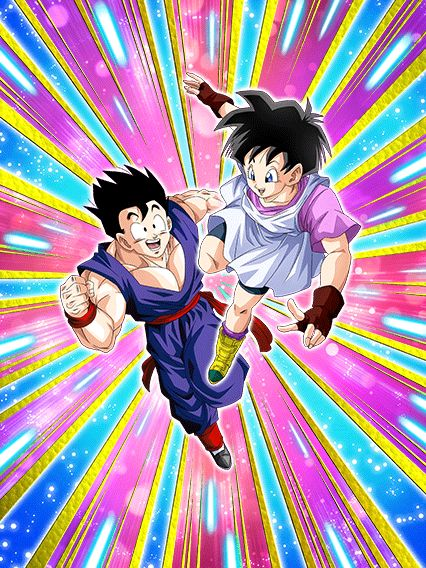
Card fofo que pode ter um dano interessante.
O Super Attack deles aumenta 30% de ATK por 9 TURNOS, o que já é bem interessante
E pra complementar esse Super Attack, eles tem 70% de chance de lançarem 2 adicionais, e esses adicionais tem 70% de chance de serem Supers
Então, nas melhores circunstâncias, você pode lançar 4 Supers num turno e ir praticamente stackando ATK
Tirando isso, eles não fazem mais nada, mas o dano deles é bom
E é isso
Queria que eles fossem melhores pra ajudar o time, mas eles acabam se restringindo as próprias categorias, aí fica difícil 💀
EZAs dos Vegettos TEQ e INT
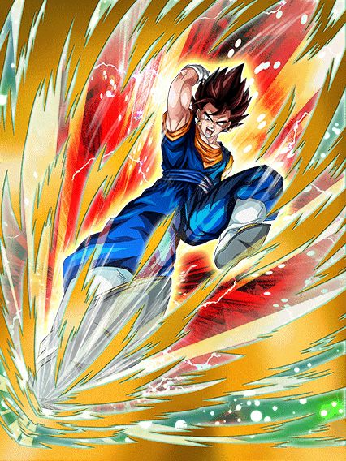 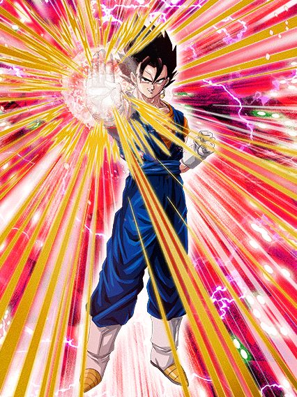
Os dois são suportes que se completam, como se deveria usar ambos juntos?
O Vegetto TEQ é mais defensivo, ganhando 15% de DEF por orb pega e buildando 5% de chance de desvio a cada ataque levado até chegar em 30% (sim, essa mecânica é horrível)
Ele também dá 30% de ATK e DEF pra todo mundo, o que é algo
O Vegetto INT faz o oposto, ganhando 20% de ATK por orb pega, buildando 5% de chance de crítico com cada ataque feito e dando 3 de Ki pra todo mundo
Em uma visão geral, apesar da mecânica horrível pra ganhar o desvio, o suporte e o desvio do Vegetto TEQ tornam ele muito melhor que o INT
No final das contas, ambos deviam ter sido melhores.
EZAs do Goku STR e Vegeta INT
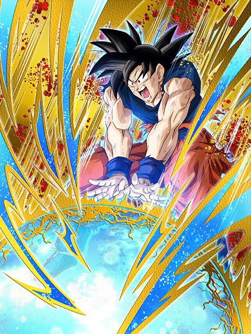 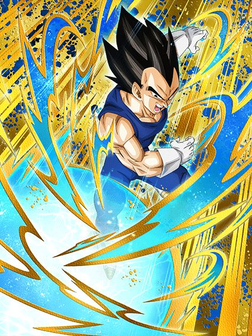
Eles são bem interessantes.
Ambos Goku e Vegeta ganham 30% de ATK e 20% de DEF por orb pega, e felizmente eles são orb changers também
O Goku é mais focado em dano, buildando 10% de chance de crítico a cada turno até chegar em 30%, e o Super Attack dele dá 30% de ATK pra geral por 2 turnos, sendo um dos primeiros a fazer isso
O Vegeta é mais defensivo, ganhando acumulando 30% de chance de desvio de forma igual a do Goku, mas o Super Attack dele aumenta só o próprio ATK e DEF por 3 turnos ao invés de todo mundo
Em geral, ambos podem ser úteis e interessantes, além de funcionarem bem juntos.
eza do super buu teq
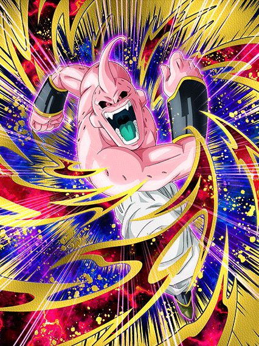
Ele é horrível.
Esse cara simplesmente tem 0% DE ATK NA PASSIVA INTEIRA
Ele tem 30% de ambas chance de desvio e chance de crítico, e cura 30% do dano q ele der como HP
Eu não preciso nem dizer nada né, dano podre, defesa horrível, desvio imprestável e cura completamente inútil
Na verdade eu me enganei, não é a cura que é completamente inútil, e sim o card inteiro.
EZA do Goten e Trunks LR
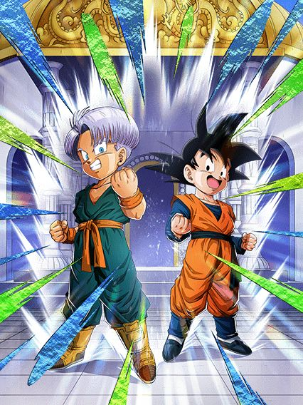
Uhhhh hey eles tem 30% de chance de desvio wow
A grande mudança que eles tiveram no EZA foi ganhar 150% de ATK e DEF quando lançam um Super Attack.. e o desvio
É só isso.
Eu sinceramente não gosto desse card e eles não ganharam basicamente nada de relevante 💀
EZA do Mighty Mask Super Strike

Eu realmente não sei qual é a das chances de desvio horríveis nessa celebração.
Esses caras até tem um daninho interessante mas a defesa deles é bem meehhhh
Se estiverem enfrentando um inimigo apenas, eles tem +50% de DEF e 30% de chance de desvio
Se estiverem enfrentando 2 ou mais inimigos, ganham +50% de ATK e lançam um adicional com 30% de chance de ser um Super
Em geral, cardzinho F2P bem mediano, mas é um Super Strike, acho que não dá pra pedir muito..
Você chegou ao fim dessa página!
Obrigado por ler tudo, e fica a vontade pra ver outras